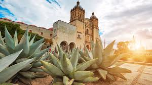
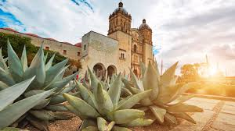

Tradición y cultura
Oaxaca es conocido por su riqueza cultural, su arquitectura colonial, sus fiestas tradicionales y su cocina única.
Oaxaca es conocido por su riqueza cultural, su arquitectura colonial, sus fiestas tradicionales y su cocina única.
